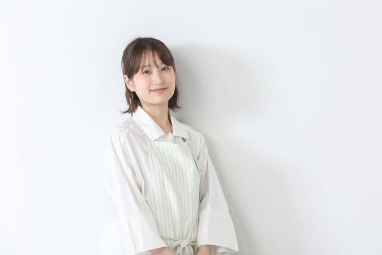
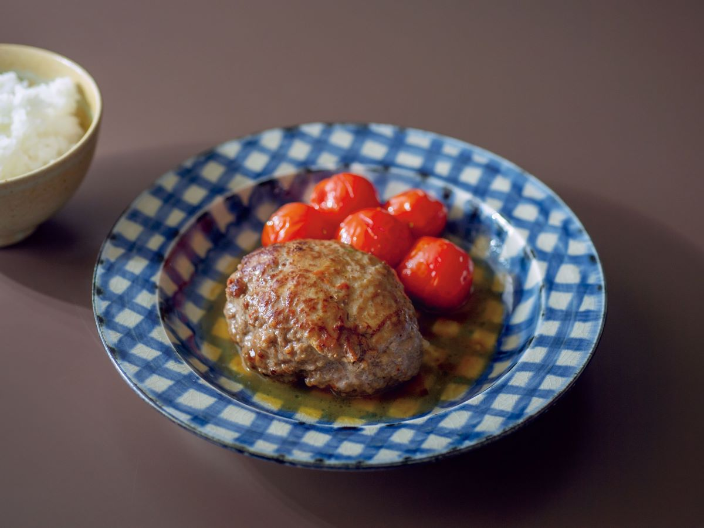
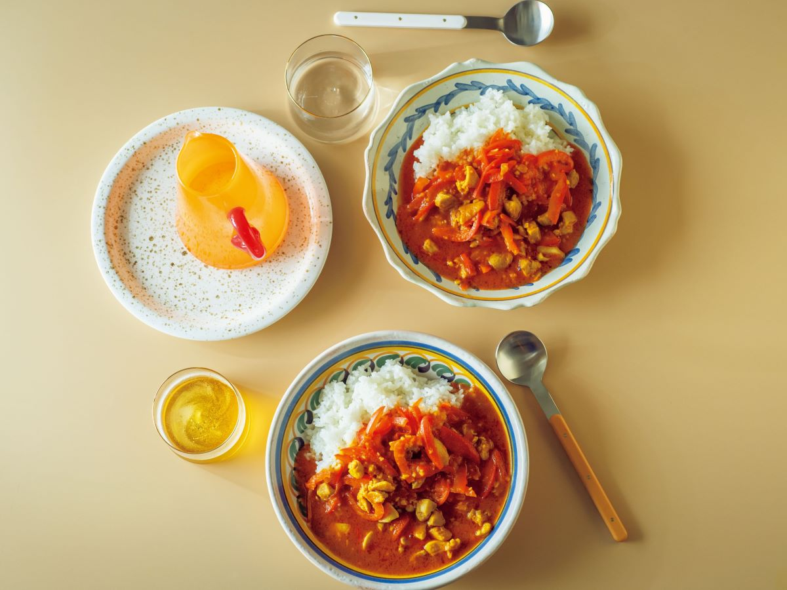
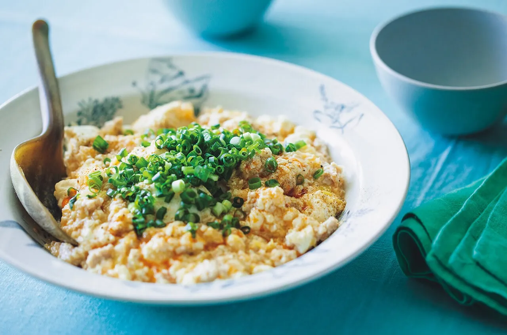

Xを眺めていて、こんな投稿を見かけたことはありませんか？——「あかり、信じてるからな…！」
レシピ投稿のリプ欄に、なぜか呼び捨てで料理家を信じる謎の構文。実はこれ、いま日本で最も"信頼されている"料理家、長谷川あかりさんに向けた、フォロワーたちの愛のこもった合言葉なんです。
「シンプルすぎて作る途中は不安。でも最後はなぜか必ず美味しくなる」。だから人は、半信半疑でも"あかりを信じて"作る——。この記事では、構文の意味から、2億インプレッションを叩き出したバズレシピの手順、おすすめレシピ本まで、まるごと解説します。
長谷川あかり＝"裏切らない"料理家
- 「信じてるからな」＝シンプル工程でも最後は必ず美味しくなる信頼の証
- 2億バズの代表作＝玉ねぎ・パン粉なし、こねない「酒蒸しハンバーグ」
- 炊飯器に豆腐ドーンの「丸ごと豆腐の炊き込みご飯」も大バズり
- レシピは流れて消える→"一生使う"なら著書が確実
「あかり、信じてるからな…！」とは？意味と由来
結論：長谷川あかりさんのレシピを、半信半疑でも"信じて"作るというフォロワー文化（ミーム）です。
由来は2024年夏。あるフォロワーの「長谷川あかりさんのレシピは、まず『信じる』という工程から始まる」という投稿が発端と言われ、そこから「あかり、信じてるぞ」「あかり、信じてるからな…！」と親しみを込めて呼び捨てで応援するスタイルが定着しました。
彼女のレシピは工程がシンプルすぎて、途中は「本当に美味しくなる…？」と不安になるから。油をほとんど使わず、塩・酒・食材の旨味で味を決める——地味な工程でも最後に必ず帳尻が合う。この"裏切られない安心感"が「信じる」に集約されています。
長谷川あかりとは何者？元てれび戦士→管理栄養士
長谷川あかり（はせがわ あかり）／1996年1月5日生まれ・埼玉県さいたま市出身。料理家・管理栄養士（元俳優・タレント）。
10歳でNHK「天才てれびくんMAX」の元てれび戦士として芸能界へ。22歳で引退後、大学で栄養学を学び管理栄養士資格を取得。2022年から料理家として発信を開始し、クックパッド『食トレンド大賞2025』で『今年の顔』を受賞しました。
「俳優を諦め、レシピ本に救われた」という原体験から生まれる料理は、ただの時短レシピではなく"生き方の提案"として支持を集めています。
なぜここまでバズる？人気の3つの理由
理由①：とにかく「シンプル」で失敗しない
調味料は最小限。塩・酒・食材の旨味を軸に油に頼らない設計だから、料理初心者でも失敗しにくい。
理由②：「ご自愛」「いたわり」という世界観
疲れた夜に、自分をいたわるための料理。忙しい現代人の心に刺さるコンセプトが、レシピに付加価値を与えています。
理由③：管理栄養士ならではの「栄養バランス」
シンプルなのに栄養設計がしっかり。「ラクして、ちゃんと整う」——この両立が信頼の源です。
シンプル（=失敗しない）× 世界観（=共感）× 栄養（=信頼）。この三拍子が「あかり、信じてるからな」という熱狂を生んでいます。
【2億バズ】酒蒸しハンバーグの作り方
長谷川あかりさんの代表作にして、X（旧Twitter）で約2.5億インプレッションを記録した伝説のレシピ。玉ねぎもパン粉もなし、手でこねず、焼かずに"蒸す"という革命的な作り方です。

🏆 2億バズレシピ🛒 材料（2人分）
- 牛豚合いびき肉 220g
- 牛乳 1/2カップ
- 片栗粉 小さじ1
- 塩・砂糖 各小さじ1/2
- おろしにんにく 小さじ1/4
- ナツメグ 6振り
- ベーコン 1/2枚
- バター 10g／料理酒 1/4カップ
- オリーブオイル 適量
- ミニトマト 10〜12個
- まいたけ・しめじ 適量
👩🍳 作り方
- フライパンに、ひき肉・牛乳・片栗粉・塩・砂糖・おろしにんにく・ナツメグと、キッチンバサミで刻んだベーコンを入れ、粘りが出るまでゴムベラで練る（手を汚さない）。ラップにオリーブオイルを少し垂らし、2等分に成形する。
- フライパンにバターを中火で熱し、肉だねを並べて片面3分焼いて返す。料理酒を注ぎ、フタをして弱めの中火で5分蒸し焼きにする。
- ヘタを取ったミニトマトと、手でほぐしたきのこを加え、再びフタをしてさらに5分蒸す。
- 器に盛り、フライパンに残った旨味たっぷりの蒸し汁をかけて完成。
📌 情報元：長谷川あかり公式X（@akari_hasegawa）／オレンジページ「長谷川あかりのあたらしいきほんの料理」。※手順は情報元を基に編集部が要約。正確な分量・最新版は情報元をご確認ください。
【炊飯器に豆腐ドーン】丸ごと豆腐の炊き込みご飯
木綿豆腐を切らずに丸ごとドーンと炊飯器へ。そのインパクトと「滋養の味」で大バズりした、スイッチひとつの絶品ごはんです。
🛒 材料（米2合分）
- 米 2合
- 木綿豆腐 1丁（300g）
- しらす 60g
- 小松菜 1束
- 料理酒 大さじ4
- 塩 小さじ2/3
- 醤油 お好みで
👩🍳 作り方
- 米を研いでしっかり水切り（できれば30分ほどおく）。小松菜は茎を1cm幅、葉をざく切りにしておく。
- 炊飯器に米・料理酒・塩を入れ、2合の目盛りまで水を注ぐ。木綿豆腐を丸ごとのせ、しらすを加えて炊飯スタート。
- 炊き上がったら小松菜をのせてフタをし、5分蒸らす。
- 豆腐を軽く崩しながらさっくり混ぜ、お好みで醤油を少し垂らして完成。
📌 情報元：長谷川あかり公式X（@akari_hasegawa）／オレンジページ「丸ごと豆腐の炊き込みご飯」。※手順は情報元を基に編集部が要約。正確な分量・最新版は情報元をご確認ください。
まだある！話題のバズレシピ
長谷川さんの"バズ"は止まりません。中でもSNSで反響の大きかった2品をご紹介（詳しい作り方は公式X・著書でチェック）。


長谷川あかりのレシピ本おすすめ3選
「結局どの本を買えばいい？」——目的別に選べば失敗しません。SNSのレシピは流れて消えますが、本なら"探さず一生使える"のが最大のメリットです。
もっとお得に楽しむ｜電子書籍・楽天ブックス
「今すぐ作りたくなった」あなたへ。スマホですぐ読める電子書籍や、ポイントが貯まる楽天ブックスもチェック。
よくある質問（FAQ）
工程がシンプルで途中は不安になっても、最後は必ず美味しくなることから、フォロワーが半信半疑でも"信じて"作る文化（ミーム）です。2024年夏の「レシピはまず『信じる』工程から始まる」という投稿が発端とされます。
はい。元子役（NHK天才てれびくんMAXの元てれび戦士）として活動後、大学で栄養学を学び管理栄養士資格を取得。2022年から料理家として発信しています。
玉ねぎもパン粉も使わず手でこねない「酒蒸しハンバーグ」が、Xで約2.5億インプレッションに達した代表的な大バズりレシピです。
公式X（@akari_hasegawa）やオレンジページ等のレシピサイト、そして多数の著書で見られます。保存して何度も作るなら書籍が便利です。
まとめ｜"信じられる料理"を、あなたの食卓にも
- 「あかり、信じてるからな」は、最も信頼される料理家・長谷川あかりへの愛の構文
- 人気の理由は シンプル × 世界観 × 栄養 の三拍子
- まずは2億バズの酒蒸しハンバーグ＆炊飯器の豆腐ごはんから
- SNSのレシピは流れて消える。"一生使う"なら書籍が確実
迷ったら、話題作が詰まった『つくりたくなる日々レシピ』か、疲れた夜に沁みる『いたわりごはん』から。今日の夜ごはんから、"信じられる料理"を始めてみてください。